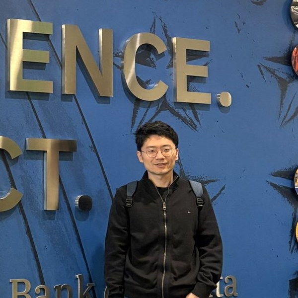
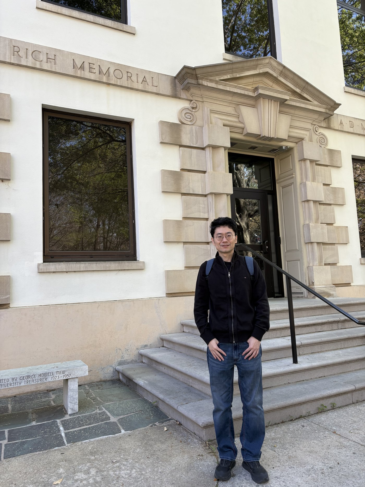

Professor of Finance · School of Business, East China University of Science and Technology
I am a Professor of Finance at the School of Business, East China University of Science and Technology (ECUST), Shanghai, China. Since April 2025 I have been a Visiting Scholar in the Department of Economics at Emory University, Atlanta, USA.
My research focuses on financial stability, DeFi and digital currency, and agent-based computational finance. My work has appeared in journals such as Journal of Financial Stability, Journal of Economic Behavior & Organization, Quantitative Finance, Journal of International Money and Finance, Physical Review E, and Annals of Operations Research. My research has been supported by the National Natural Science Foundation of China.
Financial networks and contagion, systemic risk measurement, stress testing, and the identification of systemically important financial institutions.
Decentralized finance, digital currencies, and the economics of blockchain-based financial markets.
Agent-based modeling of financial markets, limit order books, market microstructure, and behavioral finance experiments.
A full list is available in my CV. My ORCID: 0000-0002-4035-0318.
Ad-hoc reviewer for: Computational Economics, Financial Innovation, Knowledge and Information Systems, Journal of Finance and Data Science, Journal of International Money and Finance, Journal of International Financial Markets, Institutions & Money, Journal of Time Series Analysis, Scientific Reports.
Professional memberships: Society for Economic Science with Heterogeneous Interacting Agents (SEAHI); Chinese Academy of Management.
